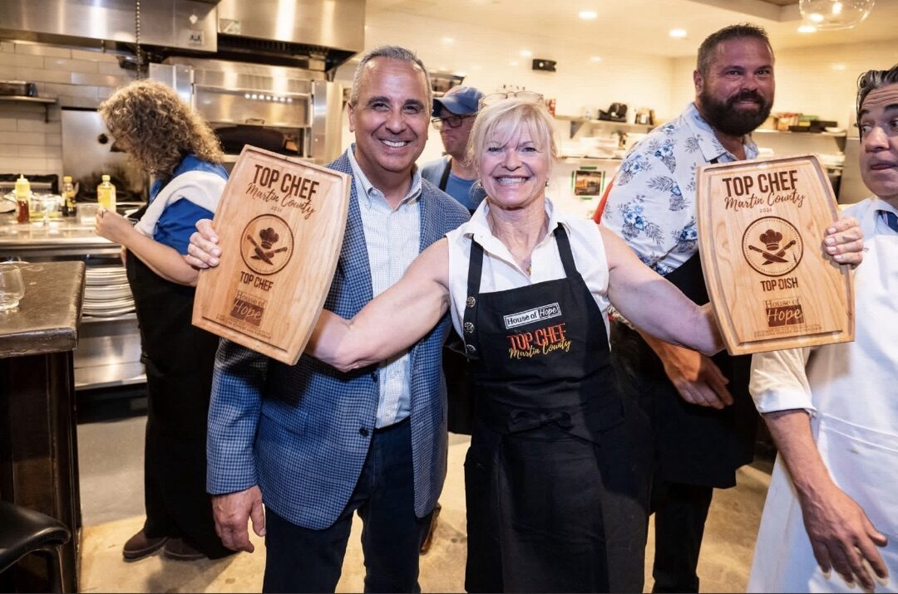
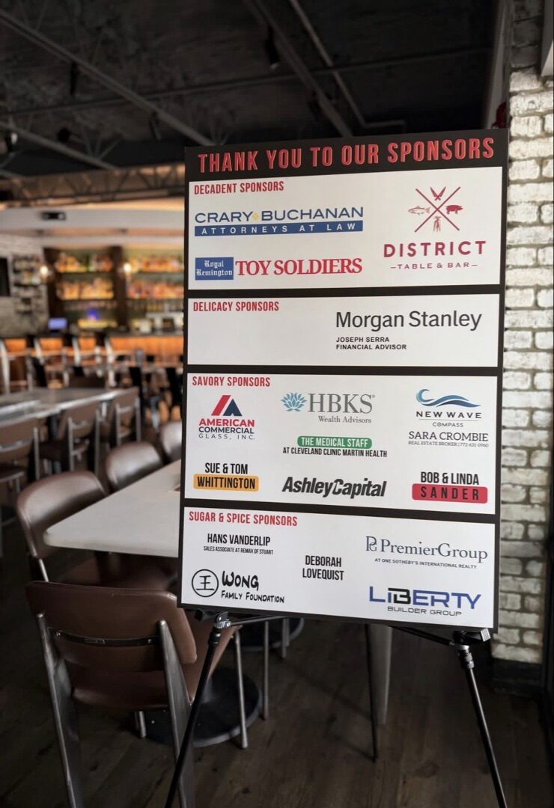
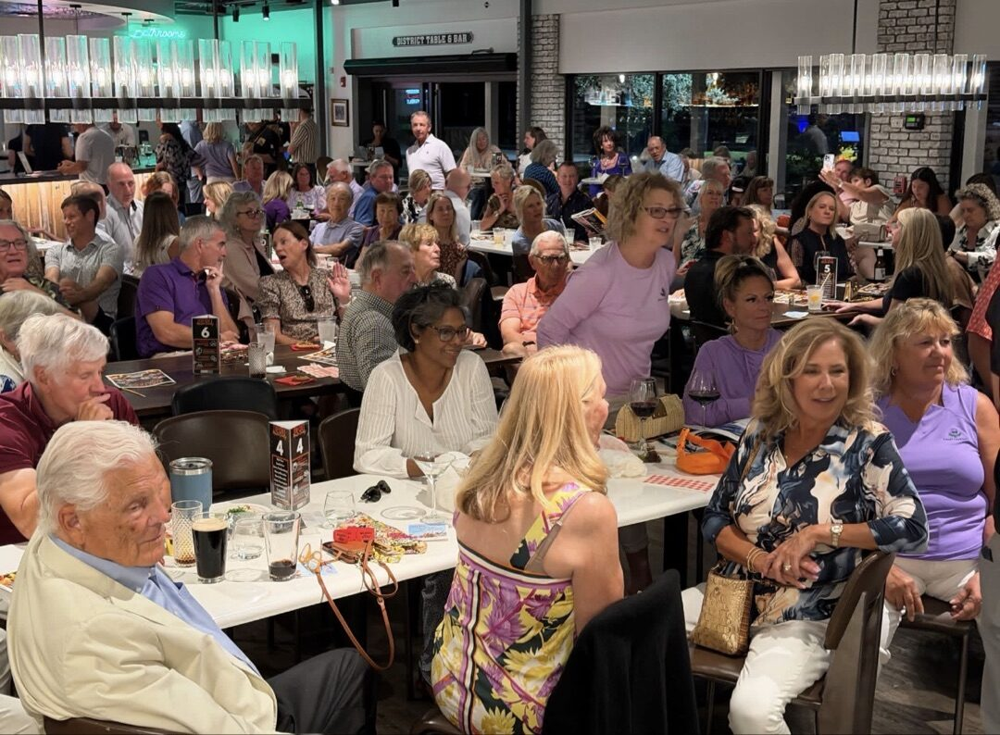
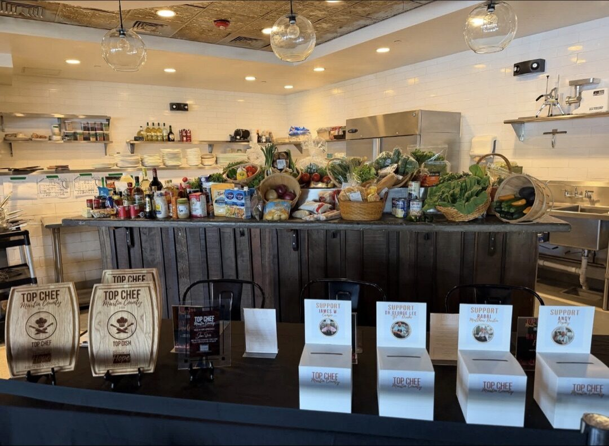

Two Awards. One Night. One Incredible Cook.
We build glass for a living. But on this night, the spotlight belonged to Nannette Walsh — and a kitchen.
Nannette is part of the ACG family. And at the 2026 Martin County Top Chef competition, she did something nobody else did: she won both Top Chef and Top Dish. Not one. Both. In the same night.
The event was hosted at District Table & Bar and benefited House of Hope, a Martin County nonprofit that supports neighbors facing food insecurity and financial hardship. The room was packed. The food was extraordinary.
ACG Was a Proud Savory Sponsor
American Commercial Glass was honored to be a Savory Sponsor of the 2026 Top Chef Martin County event. Community matters to us. We live here, we build here, and we believe in showing up for the organizations that make Martin County a place worth calling home.

House of Hope serves thousands of families across Martin County every year through their food pantry, financial assistance programs, and community support services. Events like Top Chef are how they fund that work.
A Packed House for a Great Cause
The competition brought together some of the best amateur and professional cooks in the county. Each contestant prepared dishes in a live cook-off format, with judges and the audience voting for their favorites. The energy in the room was real — people cheering, laughing, tasting, and digging into their wallets for a cause that matters.


More Than Glass
ACG is a commercial glazing contractor. That's what we do every day — storefronts, curtainwall, impact windows, the full Division 08 scope across Florida. But the people behind the company are what make it real.
Nannette's win is a reminder that the ACG team brings the same energy to everything — whether it's a glazing scope for a championship golf club, a fire station in the Keys, or a cook-off in Stuart.
Congratulations, Nannette. Top Chef and Top Dish. That's a sweep.
And thank you to House of Hope, District Table & Bar, and every sponsor, volunteer, and attendee who made the night happen. That's what community looks like.
American Commercial Glass is based on the Treasure Coast with offices in West Palm Beach, Naples, and Tampa. Learn more about our work at acglass.com/portfolio.